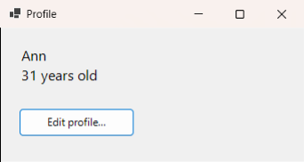
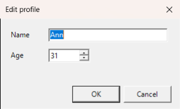

Your own dialog
Message boxes are not enough when you need several values. A dialog is a small modal window that asks for data and gives it back — with validation, default buttons, and a test that acts as the user.
What you will learn#
- what modal means and how
ShowDialogworks, - building a dialog form with
OKandCancel, AcceptButton,CancelButtonandDialogResult,- validating input and keeping the dialog open,
- returning the answer to the caller,
- testing a modal dialog with a timer.
Modal and modeless#
A modal window blocks the window behind it until it is closed: the user must answer first. That is what you want when the program needs an answer now — a file name, a choice, a few settings. form.ShowDialog() shows a window modally and waits: the line after it runs only after the dialog closed, and it returns how it was closed ("OK" or "Cancel"). A modeless window (Show()) lets the user continue working elsewhere.
The program#
# your own dialog - a modal form that asks for data and gives it back
load "dotnet.ring"
using {
"System.Drawing"
"System.Windows.Forms"
}
# the main window
oForm = ""
oShow = ""
cName = "Ann"
nAge = 31
# the dialog and its controls (the dialog code is run by events, so they are global too)
oDialog = ""
oNameBox = ""
oAgeBox = ""
oError = ""
oOk = ""
oTimer = ""
nStep = 0 # which step of the test is next
cNextName = ""
func main
oForm = uiForm("Profile",340,150)
oShow = uiLabel(oForm,"",20,20,300,50)
oShow.Font = new Font("Segoe UI",12)
uiButton(oForm,"Edit profile...",20,90,130,32,"editProfile()")
showProfile()
uiRun(oForm)
func showProfile
oShow.Text = cName + nl + nAge + " years old"
# The main window asks the dialog and uses the answer only when the user pressed OK
func editProfile
aAnswer = askProfile(cName,nAge)
if islist(aAnswer)
cName = aAnswer[1]
nAge = aAnswer[2]
showProfile()
ok
# ---------------------------------------------------------------- the dialog
# Returns [name, age] when the user presses OK, or "" when the dialog is canceled.
func askProfile cStartName, nStartAge
oDialog = new Form() {
Text = "Edit profile"
ClientSize = new Size(300,150)
StartPosition = "CenterParent"
FormBorderStyle = "FixedDialog" # a dialog is not resizable
MaximizeBox = False
MinimizeBox = False
}
uiLabel(oDialog,"Name",15,18,60,22)
oNameBox = uiTextBox(oDialog,80,16,200,24)
oNameBox.Text = cStartName
uiLabel(oDialog,"Age",15,52,60,22)
oAgeBox = new NumericUpDown() {
Location = new Point(80,50)
Size = new Size(70,24)
Minimum = 0
Maximum = 130
Value = nStartAge
}
oDialog.Controls.Add(oAgeBox)
oError = uiLabel(oDialog,"",15,82,270,20)
oForeColor = new Color().Crimson
oError.ForeColor = oForeColor
oOk = uiButton(oDialog,"OK",120,112,80,28,"okPressed()")
oCancel = uiButton(oDialog,"Cancel",206,112,80,28,"")
# the dialog knows its default buttons: Enter presses OK, Escape presses Cancel
oDialog.AcceptButton = oOk
oDialog.CancelButton = oCancel
oCancel.DialogResult = "Cancel" # a button with a DialogResult closes the dialog by itself
if uiSelfTest()
oTimer = uiTimer(150,"driveDialog()") # in a test a timer works inside the dialog, as the user would
oTimer.Start()
ok
cResult = oDialog.ShowDialog(NULL) # shows the dialog and WAITS until it is closed: "OK" or "Cancel"
if cResult = "OK"
aAnswer = [trim(oNameBox.Text),oAgeBox.Value]
else
aAnswer = ""
ok
oDialog.Dispose()
return aAnswer
# OK checks the input: an invalid input keeps the dialog open and says why
func okPressed
if trim(oNameBox.Text) = ""
oError.Text = "Please type a name"
oNameBox.Focus()
return
ok
oDialog.DialogResult = "OK" # setting the result closes the dialog
# ---------------------------------------------------------------- tests: a timer acts as the user in the dialog
func driveDialog
nStep++
if nStep = 1
oNameBox.Text = " " # first an invalid name: the dialog must stay open
oOk.PerformClick()
dnAssert("the dialog complained",oError.Text,"Please type a name")
but nStep = 2
oNameBox.Text = cNextName
oAgeBox.Value = 44
oOk.PerformClick()
oTimer.Stop()
ok

How it works#
A function that asks#
askProfile(name, age) builds the dialog, shows it, and returns [name, age] or "". The rest of the program does not know that a window was involved: editProfile calls it, checks islist(aAnswer), and uses the answer. A dialog function hides the window behind a plain call, which also makes the logic easy to follow and to test.
Making it look like a dialog#
| Property | Effect |
|---|---|
FormBorderStyle = "FixedDialog" | a thin border, not resizable |
MaximizeBox = False, MinimizeBox = False | no maximize or minimize buttons |
StartPosition = "CenterParent" | opens in the middle of the main window |
Default buttons#
oDialog.AcceptButton = oOk makes the Enter key press OK; CancelButton = oCancel makes Esc press Cancel. A button with a DialogResult (oCancel.DialogResult = "Cancel") closes the dialog by itself with that result.
Validation#
OK has its own code, okPressed: it checks the name. If it is empty the dialog stays open, shows a red message and puts the cursor back in the field (Focus()). Only a valid input sets oDialog.DialogResult = "OK", which closes the dialog. Never let a dialog return bad data: the caller should be able to trust the answer.
Reading the answer#
After ShowDialog(NULL) returns, the controls still exist: read oNameBox.Text and oAgeBox.Value, then Dispose() the dialog. (ShowDialog has several versions, so the plain call passes NULL.)
Testing a modal dialog#
A modal dialog stops the test at ShowDialog — nobody will click. The trick is a timer: a Windows Forms timer keeps ticking inside the dialog's own message loop. The test starts a timer before ShowDialog; the timer acts as the user. Tick 1 types a blank name and presses OK (and the test checks that the dialog complained, and is still there); tick 2 types Bob, sets the age and presses OK, and stops the timer. The main test then checks that the answer was used.
The checks of this program are in a separate file, selftest/ch10_dialog.ring:
# the checks of ch10_dialog.ring: run with ring ch10_dialog.ring --selftest (the program loads this file and runs selfTest() once its window is shown)
func selfTest
cNextName = "Bob"
nStep = 0
editProfile()
dnAssert("the answer was used",cName,"Bob")
dnAssert("the age was used",nAge,44)
dnAssert("shown in the window",oShow.Text,"Bob" + nl + "44 years old")What you learned#
ShowDialogis modal: it waits and returns the result,AcceptButton,CancelButton,DialogResult,- validate before closing with OK,
- a dialog function that returns data or
"", - a timer drives a modal dialog in a test.
Exercises#
- Add a Country combo box to the dialog.
- Show the current profile in the dialog title (
Edit profile - Ann). - Add an Apply button that changes the main window without closing the dialog.
- Use the standard dialogs for a change:
ColorDialog,FontDialog,FolderBrowserDialog(they also useShowDialogand return"OK").